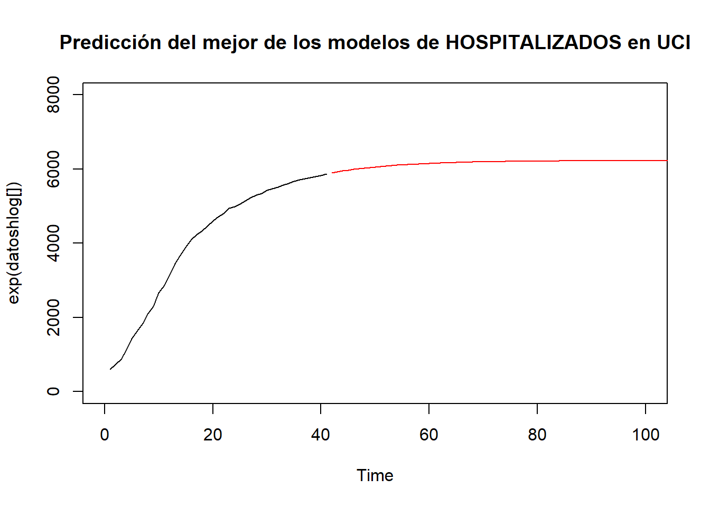

Metodologia
Metodología común
Representación gráfica de los datos


Representamos los dos gráficos de datos con los csv obtenidos a partir de la base de datos datadista que se actualizan automáticamente cada mañana con la nueva información del Gobierno.
Los datos no son estacionarios, lo que en sentido estricto supone que la distribución de probabilidad es constante para todos los momentos del tiempo. Nosotros buscamos que los procesos sean estacionarios en sentido debil, lo que requiere que el primer y segundo momento se mantengan constantes.
En el gráfico se puede ver una tendencia creciente marcada que no pasa por la media mas que una vez.
Respecto del registro de los datos, en el caso de los hospitalizados en la UCI los datos comienzan el 10 de marzo mientras que los fallecidos comienzan el 3 de marzo.

Podemos observar que los datos de las series temporales no se distribuyen como una normal ya que las observaciones no se ajustan a la recta de 45º.
Transformación previa de la serie y eliminación de la tendencia.
En las dos series aplicamos logaritmos para hacerlas estacionarias en varianza. Además, aplicamos diferencias para que las series se vuelvan estacionarias en la media. En nuestro caso estos procesos son integrados de orden 1, por lo que únicamente se aplican diferencias una vez.

Una vez aplicamos logaritmos se puede observar que la serie empieza a oscilar alrededor de la media pero aun presenta cierta consistencia.
Identificación del modelo
Empezaremos analizando los correlogramas de las series en primeras diferencias. Con esto se representan las correlaciones simples y parciales de cada una de las series.
Una vez transformada la serie en estacionaria, se determinará el orden de la parte autorregresiva (p) y el de la parte de media móvil (q) del proceso ARMA que se considere que haya podido generar la serie estacionaria. Para tal fin utilizaremos la representación gráfica de las funciones de autocorrelación simple y parcial de la serie transformada para que nos ofrezca una orientación para la formulación del modelo orientativo.


En el caso de los ingresados en la UCI, R nos aconseja mediante la función auto.arima un modelo ARIMA (0,1,3).
En primer lugar, basándonos en los correlogramas de la función de autocorrelacion y autocorrelacion parcial observando los gráficos podríamos decir que se trata de una AR(1) y una MA(3) y para convertirla en estacionaria añadimos una diferenciación. Hablariamos de un ARIMA (1,1,3).
Por ello los primeros modelos a aplicar han sido un ARIMA (1,1,3), ARIMA (1,1,0) y ARIMA (1,1,1).
En el caso de los fallecidos, la función auto.arima recomienda un modelo ARIMA (2,1,0). Sin embargo, se han analizado adicionalmente los modelos (2,1,1), (1,1,2), (2,1,2) y (2,2,0) tanto en primeras como en segundas diferencias.
Fase de estimación
Una vez identificado el modelo que se considera apropiado, se procede a la estimación definitiva de sus parámetros. En este punto, no debemos olvidar que si hemos tomado d diferencias en la serie se perderán observaciones.
Fase de validación
En esta etapa se comprobarán las capacidades de ajuste de los modelos propuestos. En caso de que los modelos no superen satisfactoriamente este paso, será necesario probar con otros modelos. Para la aceptación del modelo, éste debe cumplir los siguientes requisitos:
Análisis de la bondad de ajuste.
Generalmente en este aspecto se suele utilizar el coeficiente de determinación, si bien los coeficientes de determinación de diferentes modelos univariantes sólo son comparables en aquellos modelos en los que se hayan tomado idéntico número de diferencias, debido a que para que éste sea un elemento de comparación directa, la varianza de la variable debe ser la misma.
Para paliar este inconveniente, se ha utilizado el estadístico loglik. Siguiendo este criterio, se seleccionará aquel modelo para el que se obtenga un loglik más alto. No se obtendría información sobre si un modelo es bueno o no, únicamente solo permite la comparación entre modelos.
En primer lugar observamos los resultados para los hospitalizados en UCI. Obtenemos unos resultados muy próximos entre los tres modelos utilizados dándonos mejor ajuste de bondad utilizando el modelo loglik con ARIMA (1,1,3), (1,1,0) y (1,1,1), cuyos resultados se muestran respectivamente (coeficientes y valor loglik).
## ar1 ma1 ma2 ma3
## 0.92076073 -0.50139313 -0.28991845 0.06502472## [1] 89.97102## ar1
## 0.8880271## [1] 84.41333## ar1 ma1
## 0.9216753 -0.6688116## [1] 88.86141Hemos utilizado también las predicciones que nos aporta cada modelo comparándolas con las observaciones que vamos obteniendo cada día y actualizando el modelo con las observaciones vigentes. Se ha realizado este procedimiento desde el día 13/04/2020 hasta la actualidad, donde hemos podido observar que se ajusta mejor el ARIMA (1,1,3) dando predicciones de error próximas al cero por ciento.
Respecto de los fallecidos, obtenemos que los resultados con todos los modelos estudiados son muy similares, ya que los valores loglik para todos los modelos utilizados ha sido muy similar, por lo que la alternativa más adecuada ha sido elegir el modelo según la forma de la curva que proyectaba más que por estrictamente el valor loglik más alto de los modelos (2,2,0), (2,1,1), (1,1,2) y (2,1,2) respectivamente.
## [1] -240.2817## [1] -243.9584## [1] -260.7423## [1] -243.5542Análisis de los residuos. Como sabemos, una de las hipótesis de los modelos univariantes es que el término de error del modelo es ruido blanco. Por ello, los residuos obtenidos tras la estimación del modelo deben seguir un proceso puramente aleatorio con distribución Normal, ya que, de lo contrario, contendrían información relevante para la predicción que se estaría despreciando.
Importante graficar los residuos después de hacer el ajuste para ver si tienen algún tipo de estructura, si se percibe una serie o estructura hay algo que no estamos captando en el modelo. En este caso se puede observar en el gráfico no siguen una estructura o serie por lo que podemos verificar un comportamiento no sistemático de los mismos. Al mismo tiempo no existen errores significativos.
Respecto de los hospitalizdos en la UCI presentamos el correlograma del ARIMA (1,3,0) finalmente elegido. En este correlograma se entiende que el modelo es correcto si los residuos se pueden considerar ruido blanco.

Utilizamos la prueba Jarque-Bera, se trata de una prueba de bondad de ajuste para comprobar si los residuos tienen la asimetría y la curtosis de una normal. Ya que en el gráfico no se puede apreciar claramente que sigue una normal.
##
## Jarque Bera Test
##
## data: ARIMAH1$residuals
## X-squared = 153.15, df = 2, p-value < 2.2e-16
Se utiliza una significación del 10% por lo tanto se considera que la hipótesis nula, que muestra que la simetría es nula y curtosis = 3, entonces probamos la hipótesis de normalidad de los residuos.
Por ello utilizamos el modelo seleccionado ARIMA (1,1,3) como fórmula inicial de predicción.
Respecto de los fallecidos:
 Por último, aquí se encuentran los residuos del modelo elegido (1,1,2), con mejor predicción.
Por último, aquí se encuentran los residuos del modelo elegido (1,1,2), con mejor predicción.